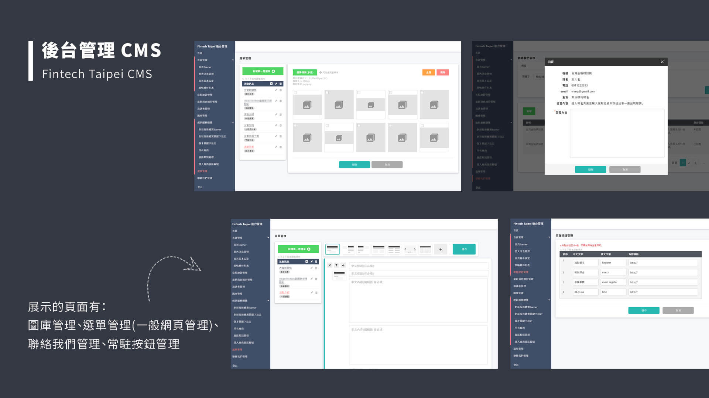

金研院-Fintech Taipei
實際網站 website-
專案背景 Project Overview
金研院本身過去已有委託其他公司製作前台及CMS後台，但後台管理人員反應原本的後台介面流程操作不易、功能欲變更或新增、而前台則欲換主視覺及配色等等，故前後台重新另作，而部分的資料結構則是沿用。
-
我的角色 My roleUI/UX Designer
-
負責項目 Deliverables
- 將外包設計師的UI設計輸出素材(Adobe XD)
- 規劃後台CMS流程(8項主功能、10項次功能)
- 使用bootstrap、html、css、jQuery前後台頁面切版，其中套件使用lightGallery、masonry、scrollmagic、animate.css、owlcarousel等等，製做首頁動畫，相簿照片瀑布式排版。
- 功能測試、查找重現bug並整理成待修改列表(.excel)
-
設計目標 Design Goal
-
【前台網站】
使用客戶提供的主視覺Banner進行前台網頁配色，重新排版降低原先首頁較繁雜的背景。
讓User能於各裝置使用前台網站查看最新消息，活動議程，廠商會員登入，下載文件資料等等，並提供中英語言切換。 -
【後台CMS】
讓網站管理人員可任意新增選單頁面(提供15種頁面類型)、自定義內頁內容(提供7種排版方式)、廠商管理、聯絡我們管理、首頁內容管理等等。
-
【前台網站】
-
過程與挑戰 Process
- 此次與新進工程師共同開發，但因他還不是很熟悉過往案子使用到的套件、程式的寫法，所以會需要額外翻找過去專案的頁面作為範例，讓他可參考過去其他工程師的寫法。
- 案子開發時間很短，印象中是1~2兩個禮拜就要把前、後台的頁面全部切版完成，工程師才會有較多的時間串接。當工程師完成一個功能，我這邊就會馬上進行測試並整理待修改項目，而同時他則是繼續做其他功能，最後功能全部做完時工程師即可直接查看欲debug的項目，在預定的時程內完工。
最終產出 Final Outcome

後台介面流程設計